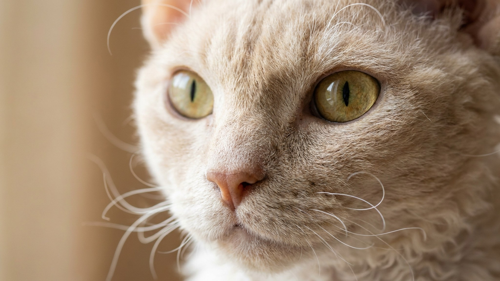

Кто-то скрестил ла-перма с манчкином, получился кот с кудрями и короткими лапами одновременно. Порода называется скукум, мировое поголовье пока исчисляется сотнями, и большинство владельцев берут такого кота, не зная заранее двух вещей: как устроена его шерсть и что он думает о высоких полках. Ниже коротко о том и другом.
🐾 У вас скукум?
AnimaLife соберёт уход под породу: к каким болезням есть склонность, что проверять по возрасту, чем кормить и когда пора к врачу. Бесплатно, прямо в мессенджере.
Собрать план ухода → Собрать в MAX →
У вас iPhone? AnimaLife есть в App Store
Скукум появился в США в 1990-х, когда заводчик Рой Гантер начал скрещивать ла-перма с манчкином. Ла-перм дал кудрявую, мягкую шерсть с характерным завитком. Манчкин дал короткие конечности: результат естественной мутации хряща, а не селекционного укорочения костей. Порода до сих пор остаётся экспериментальной: TICA признала скукума в статусе развивающейся породы, в Европе он встречается редко. Котят мало, цены высокие, очереди у проверенных заводчиков длинные.
Шерсть скукума бывает короткой и длинной, но завиток есть в обоих случаях. Вблизи шерсть ощущается как каракуль, пружинит под рукой.
Скукумы общительные и не любят одиночества. Несколько часов в пустой квартире они переносят нормально, но восемь часов каждый день уже плохо: начинают шуметь или искать, что погрызть.
Если дома уже есть кошка или собака с ровным характером, скукум впишется без долгой притирки.
Мнение «коротколапый кот страдает» устойчиво, но неточно. Манчкины и скукумы с нормальным строением скелета бегают, прыгают и охотятся за игрушками без видимых ограничений. Короткие лапы снижают высоту прыжка, но не убирают его совсем.
Что реально стоит учесть в быту:
Если котёнок хромает, избегает нагрузки на одну лапу или отказывается прыгать вообще, обсудите это с ветеринаром: речь уже не о породе, а о конкретном коте.
Главная ошибка с кудрявой шерстью: вычёсывать слишком часто и жёсткой щёткой. Завитки от этого распрямляются и больше не возвращаются в прежнюю форму. Скукум не требует ежедневного груминга.
Купать скукума можно раз в месяц или реже, если кот живёт в квартире и не пачкается.
Порода хороша для людей, которые проводят дома достаточно времени и хотят контактного кота. Работает в семьях с детьми, подойдёт как компанион одному владельцу. Плохо переносит стресс от частых переездов и смены состава семьи.
Скукум редкая порода, а значит, к заводчику нужно относиться внимательно: уточняйте историю родителей, смотрите на условия содержания котят. Это убережёт от покупки с непроверенной генетикой.
🐾 Ваш питомец — скукум?
Заведите профиль в AnimaLife: приложение запомнит породу, возраст и вес и будет подсказывать по уходу именно для неё. Вопросы AI-ветеринару — круглосуточно и бесплатно.
Завести профиль → Завести в MAX →
У вас iPhone? AnimaLife есть в App Store
🐾 Понравился разбор?
Подпишитесь на канал — каждый день разбираем по одному тревожному симптому у кошек и собак: что в пределах нормы, а когда пора к врачу. Подпишитесь, чтобы не пропустить разбор, который может спасти здоровье вашего питомца.